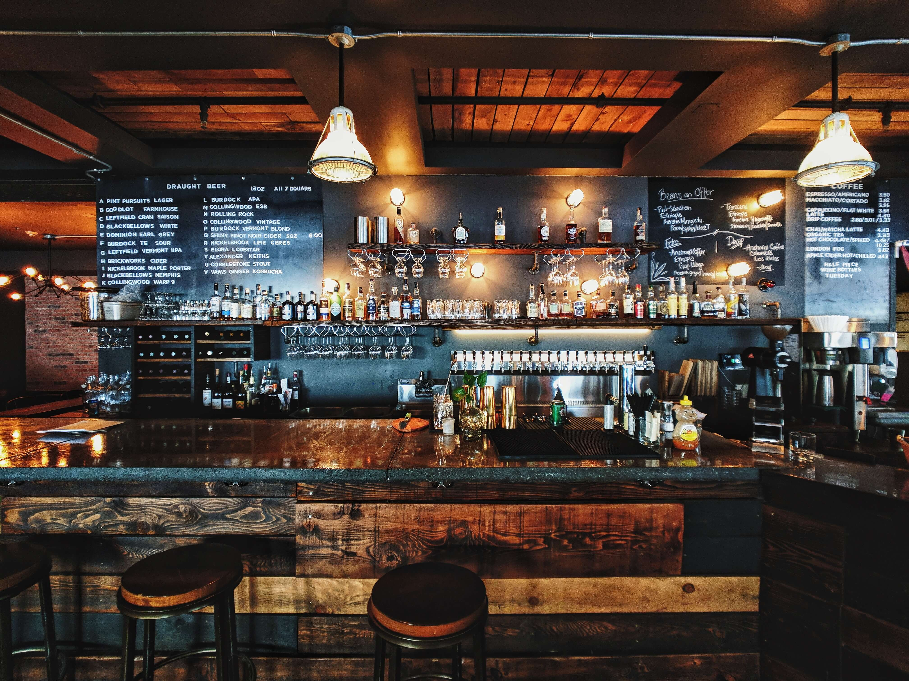
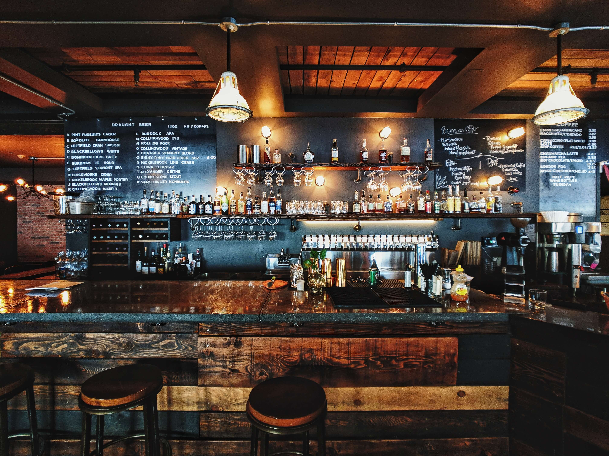

What to expect during
With construction starting in April 2019 we anticipate the new arrival of the The current SA Fitness Zone and gym will be operating and open as usual. Please visit the Fitness Zone and the Gymnasium for more information on the hours, offerings, and pricing.
who
is ARC?We are the Athletics & Recreation Centre. This is an exciting venture for our Algonquin Community. This facility will provide our students with a place to break through perceptual barriers in a welcoming, safe, inclusive and inviting environment for students of students of all backgrounds, cultures and abilities to spark a movement.
What
is this going to cost me?This facility will be included in your activity fee. All fee-paying students can use and participate in all activities in the building. As for the facility, it will cost Algonquin College $48.8 million.
Where
Will the ARC building be? The ARC building will be located northeast of the Student Commons building, opposite of the residence. The facility will be an estimated 100,000 square feet! Connected to the Student Commmons by a "Plus 15" Pedestrian Link.
 

Need a break?
Restaurant & Loung
will have full service throughout the day. Why not come in after a long day of class and order one of our famous poutines. Finished with your food and drink? Why not try out the billards area. Grab some friends and dominate them in some pool. Pool,not your thing? Then come on downstairs and try out the new bowling lines!
Competitive friends?
Bowling Lans
Are finally here. Grab your friends and book a lane ate the Students' Association Bowling Lanes that will be part of the upcoming ARC!Don't like bowling? Well, look no further. Practice your swing no matter the weather on the Golf Simulator that will be located in the ARC building.
New year, new me
Fitness Rooms
Cardio equipment, free weights, selectorized weight equipment and stretching areas will be located in strategically placed locations to best suit your work-out routine.. Indoor walking/running track that will test your endurancewith inclines and declines that weave around fit ness nods, the gymnasiums and the lounge area.

Indoor climbing?
Rock climbing
Test your strength and flexibility on the rock-climbing wall. Add some variety to your fitness routine, the ARC will be able to offer more yoga and fitness classes to fit into your busy schedule. After a busy day of rock climbing or yoga,come and enjoy our new massage therapy area.